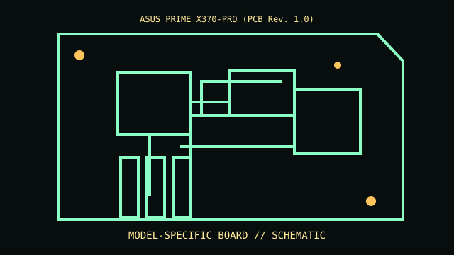

[ MODEL-SPECIFIC COMPONENT // MOTHERBOARDS ]
ASUS PRIME X370-PRO (PCB Rev. 1.0)
A sourced record of one model and its documented revision-specific behavior. Similar model numbers and later board spins are distinct products.

IDENTIFY THE PCB FIRST: Record silkscreen, assembly revision, product suffix and firmware string. Use revision-matched manuals and support lists; verify against the physical board.
Documented specifications
| Exact model / revision | ASUS PRIME X370-PRO (PCB Rev. 1.0) |
|---|---|
| Socket / processor | AM4 Ryzen CPUs only when on ASUS support list with required BIOS. |
| Chipset / architecture | AMD X370. |
| Memory | Four DDR4 DIMMs dual-channel; QVL/CPU/BIOS constrain speed and capacity. |
| Form factor | ATX. |
| I/O / expansion | PCIe, M.2, SATA, USB 3.1, Ethernet and audio. |
| Firmware / boot compatibility | ASUS UEFI; generation support depends on BIOS. |
Compatibility and revision pitfalls
AM4 fit does not guarantee cross-generation CPU support. Check CPU list and BIOS, and identify supported update path before fitting a later CPU.
Before substitution, check exact CPU/SoC support, minimum BIOS/bootloader, memory population, power connectors and chassis requirements. Matching socket or connector alone does not prove compatibility.
Repair and preservation notes
Save storage settings; inspect AM4 CPU pins, VRM and M.2 pads; update only by documented method with stable power.
Record provenance, labels, firmware and test conditions. Photograph traces, jumpers and cable routing before repair or cleaning.
Sources & further reading
- ASUS PRIME X370-PRO manuals/downloadsOfficial model docs.
- ASUS PRIME X370-PRO CPU supportManufacturer list and BIOS minima.
Manufacturer manuals, CPU lists and archived technical references form the basis of this record. Revision-specific documents take precedence over family summaries.